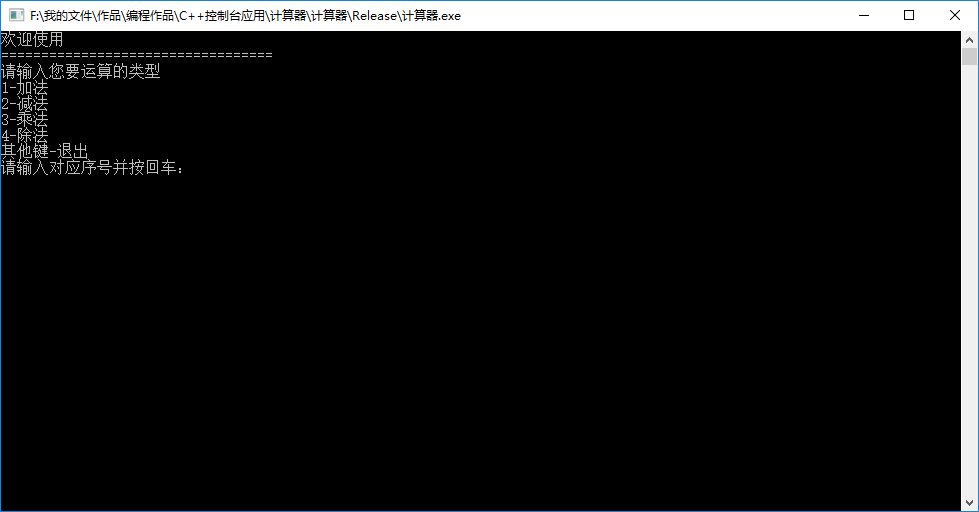
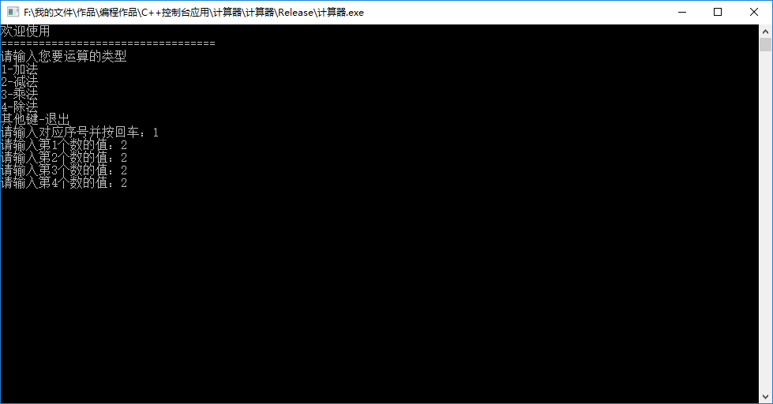
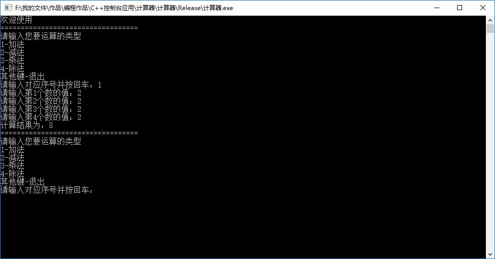
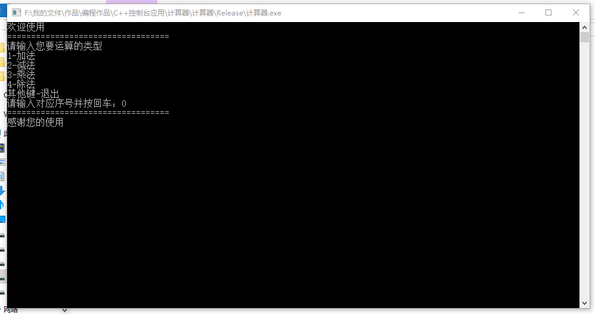
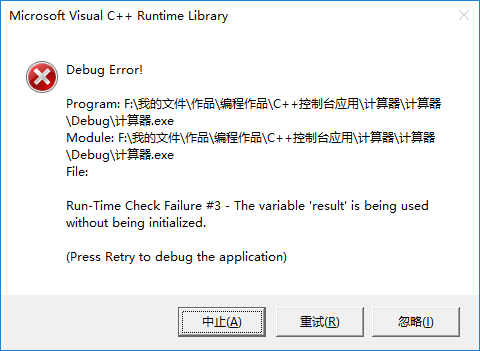

UP初学C++语言自制的计算器
使用说明:
打开程序，如图
输入要计算的类型对应的序号并按回车，如图（此处以加法为例）
输入4个加数，每输入一个加数按一次回车（如没有加数请用0占位，不要输入空数）
输入完成后，按下回车，得到计算结果，然后重复第2步
使用完成，可以关闭窗口，也可以在第2步中输入0，即可退出
重要——待解决的bug：
由于UP刚刚接触C++语言，技术比较菜，有以下严重问题没有解决
每个计算的值只能输入5位以下的数，如果输多了就会崩溃（问题表现为：像中毒了一样，乱跑码）
另外，UP在调试此问题时，IDE报错如下
如果有懂得大佬，可以在下方下载调试文件，如果有好的解决方案可以私信UP，非常感谢！
下载链接：
主程序（下载VC运行库后可以直接运行，适合体验）：点此下载（12.5KB）
程序的调试文件（解压后，安装visual studio 2019并打开文件夹里面的.sln文件，适合开发者研究其功能）（中国移动云盘提取）：提取码:FYjy
点此下载并提取（36.99MB）